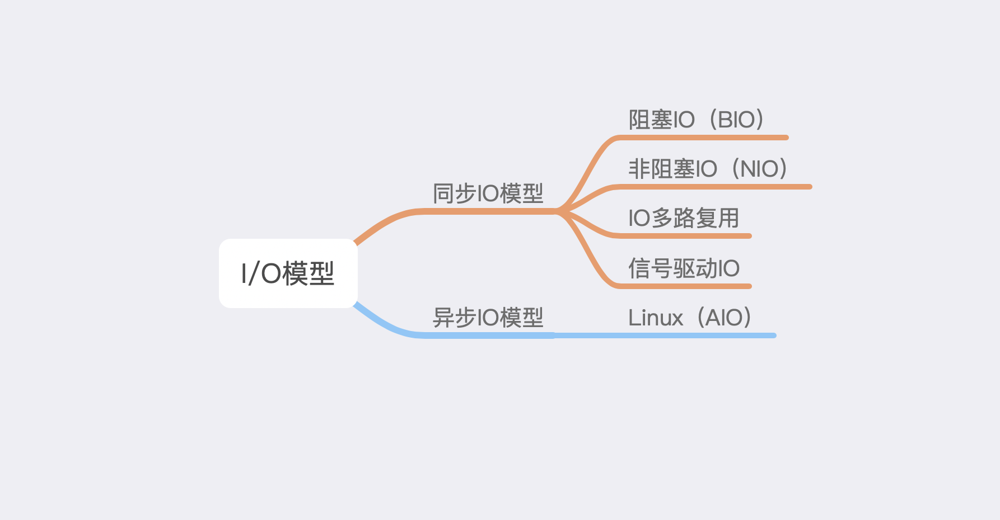
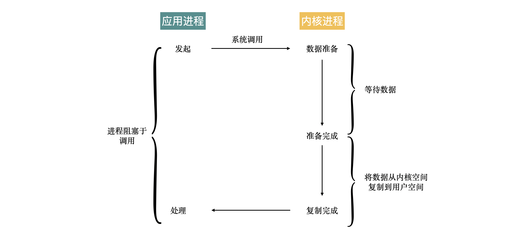
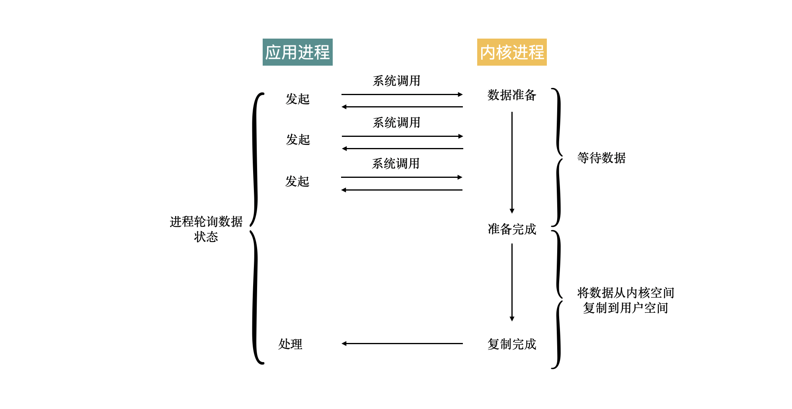
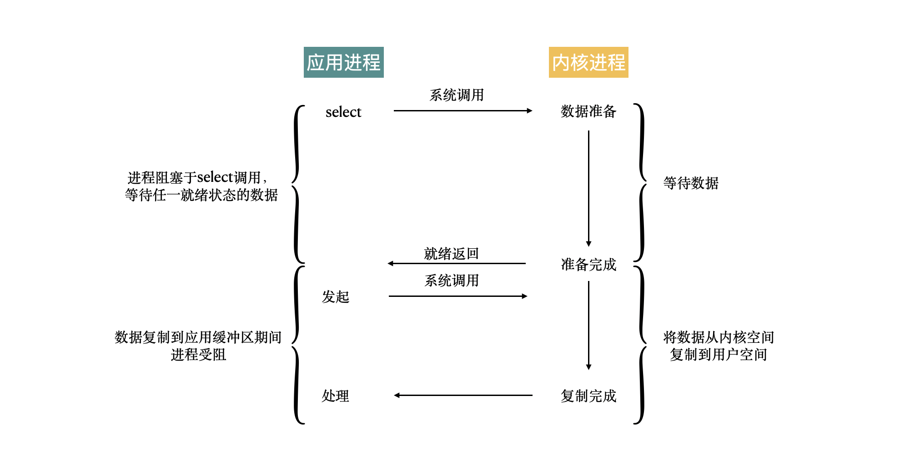
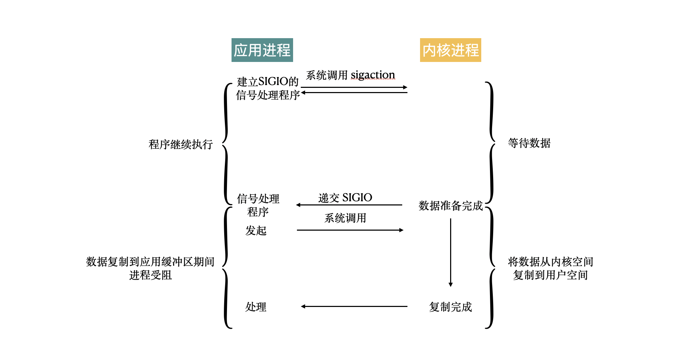
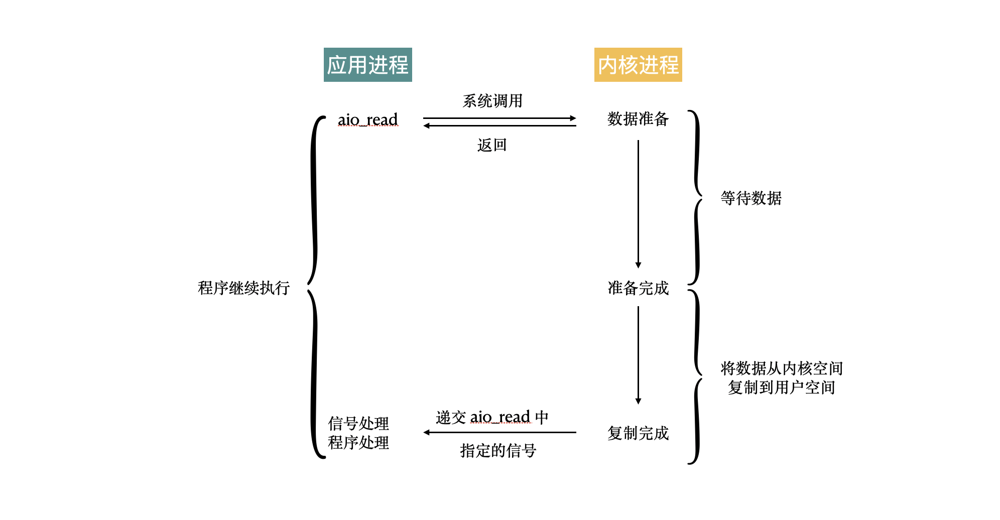
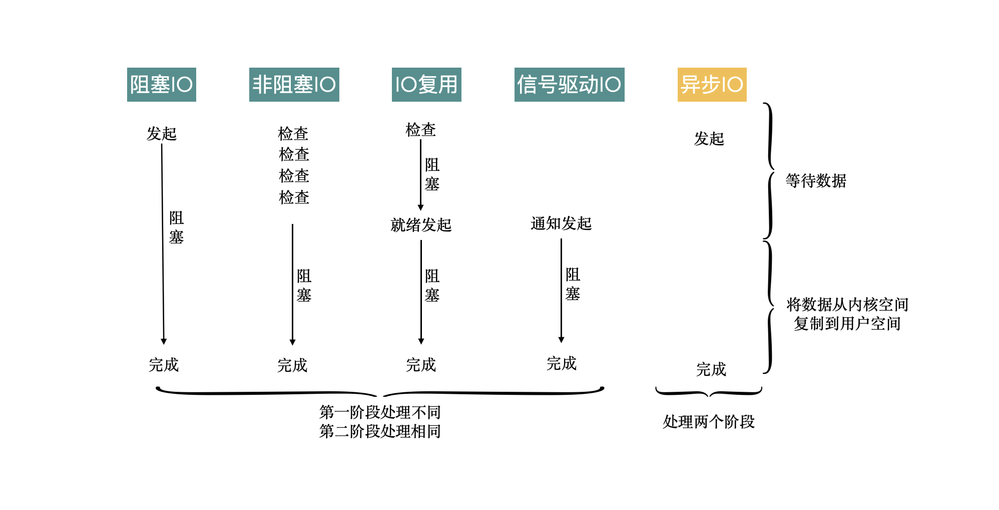

从 Java 中的零拷贝到五种IO模型
在之前的文章中，我们聊过了 Java 中的零拷贝，零拷贝就是指数据不会在内核空间和用户空间之间相互拷贝。这样就减少了内核态与用户态的切换，自然就很高效。
拷贝文件只是 IO 操作中一个特殊的情况，大多数的 IO 操作还是需要将数据从内核空间移到用户空间，这往往是一个比较耗时的操作。
IO 操作不仅仅指对文件的读写，网络的通信同样也是 IO 操作。
如今很多系统的瓶颈就在于 IO 上，比如经典的 C10K，C10M 问题本质上就是在解决 IO 问题。
这篇文章将介绍经典的 IO 模型的实现原理，以及说明 Java IO 与这几种 IO 模型的关系。
本文讨论的环境为 Linux
IO 操作是怎么实现的
IO 操作是一个很复杂的过程，远远不止调用一个函数那么简单，因为每一次的 IO 操作都会涉及到操作系统的内核空间和用户空间的转换，真正执行的 IO 操作实际上是在操作系统的内核空间进行。
这是一个很耗资源的操作。计算机中内存和 CPU 都是非常稀有的资源，应该尽可能提高这些资源的使用效率。
IO 操作经常需要与磁盘就行交互，所以IO 操作相比于 CPU 的速度要慢好几个数量级。利用这两者之间的速度差异，就可以实现不同种类的 IO 方式，也就是俗称的 IO 模型。
当然，这些 IO 操作的都在操作系统层面上实现好了，编程语言可以利用这些能力去实现 IO 相关的 API。
五种 IO 模型
在 操作系统中，IO 模型有如下五种：

在上文已经说到，其实 IO 操作就是将数据在用户空间与内核空间进行相互转换，这个过程是通过系统调用来完成的。 IO 技术的发展目标就是如何使用尽可能少的资源来完成数据的传输，这里资源主要就是指 CPU 资源。
无论是文件 IO，还是网络 IO，最后都可以统一为用户空间和内核空间数据的交换。
BIO
BIO 是最经典的一种 IO 方式，也是最简单粗暴的方式，在发起 IO 操作之后，当前调用线程就会处在阻塞状态，直到数据传输完成。

NIO
NIO 是在 BIO 基础之上的一个改进，NIO 在数据还未准备好的情况下，不会阻塞进程，而是通过轮询的方式，不断的去查询数据时候准备好，当数据可以被读取时，当前线程就会处在阻塞状态，直到数据读取完成。

所以 NIO 中的非阻塞指的是在等待数据的阶段，实际进行数据传输时，还是阻塞的，这点需要注意。
IO 多路复用
IO 多路复用是对 NIO 的一个改进，在 NIO 中，需要不断轮询查看数据是否准备好，IO 多路复用的改进是不再主动去查询数据状态是否准备完成，而是等数据准备好的通知，当数据准备完成之后，才会开始传输数据。

与 NIO 一样，在数据的传输阶段，当前线程依然是阻塞的。
在 Linux 系统中，IO 多路复用的方式有多种：
- select
- poll
- epoll
信号驱动 IO
信号驱动 IO 通过 sigaction 系统调用，向内核发送一个信号，当内核中数据准备好之后，当前线程也会接收到一个信号，在这个过程中，当前线程也是非阻塞的。在接收到信号之后，就可以开始传输数据。

AIO
上面的这些 IO 模型虽然有些号称是不阻塞的，那是指在等待数据就绪的过程中是不阻塞的，但是在接收数据的时候，依然还是阻塞的。
AIO 是这些 IO 模型中真正实现完全不阻塞，AIO 在被调用之后直接返回，连接收数据的阶段也是非阻塞的，等到数据接收完成之后，内核才会返回一个通知，也就是说当用户进程接收到通知时，数据已经接收完成。

在 Linux 中提供了 AIO 的实现，但是实际上使用的并不多，更多还是使用独立的异步 IO 库，比如libevent、libev、libuv。

Java 中 IO 的实现
Java 中的 IO 也不例外，实际的 IO 是调用了系统的能力来完成，在用户态通过系统调转到内核态，最终实现文件的读写或者通信。
Java 中 IO 就是典型的 BIO，而且 NIO 则不是对应五种 IO 模型中的 NIO，Java 中的 NIO 实际上是使用 IO 多路复用来实现的。
Java 中的 NIO2 也称之为 AIO，正是对应操作系统中的 AIO，当然具体的实现可能是其他的库。
文 / Rayjun
REF
[1] Unix 网络编程